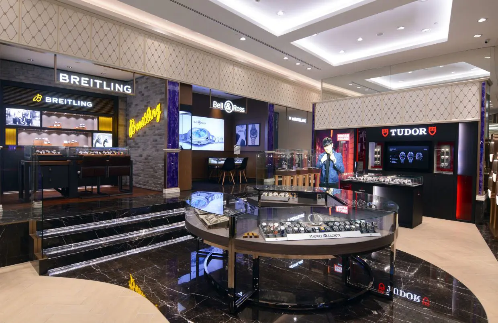

Welcome to our prestigious boutique. Excellence and precision on your wrist. We curate the finest collection of Swiss-made horology and timeless craftsmanship designed to elevate your everyday elegance.
"The level of expertise and discretion at Aura Luxury Timepieces is unmatched. Finding my grail watch here was an absolute pleasure, and their after-sales service is world-class."
